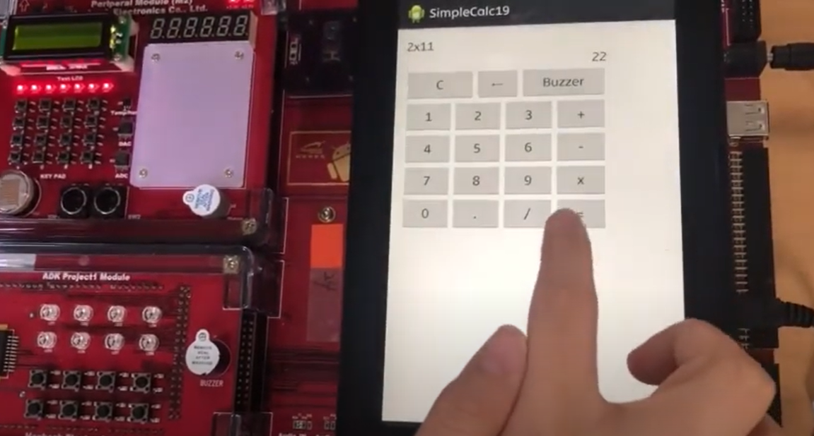
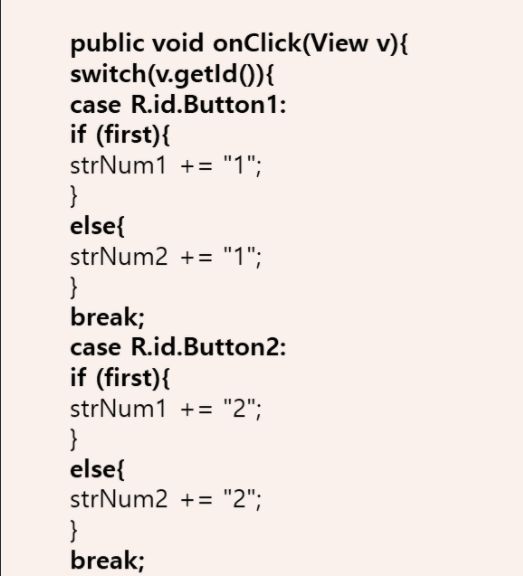
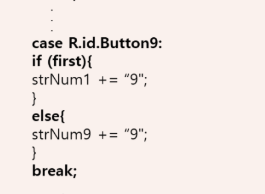
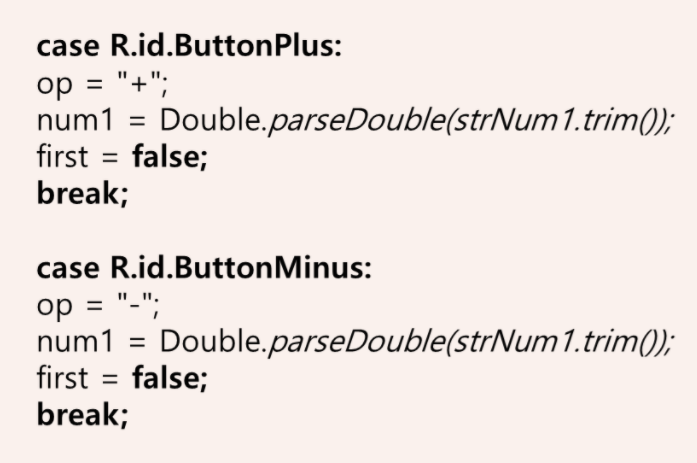
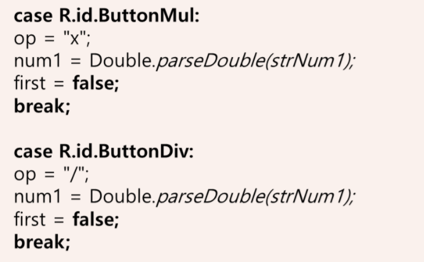
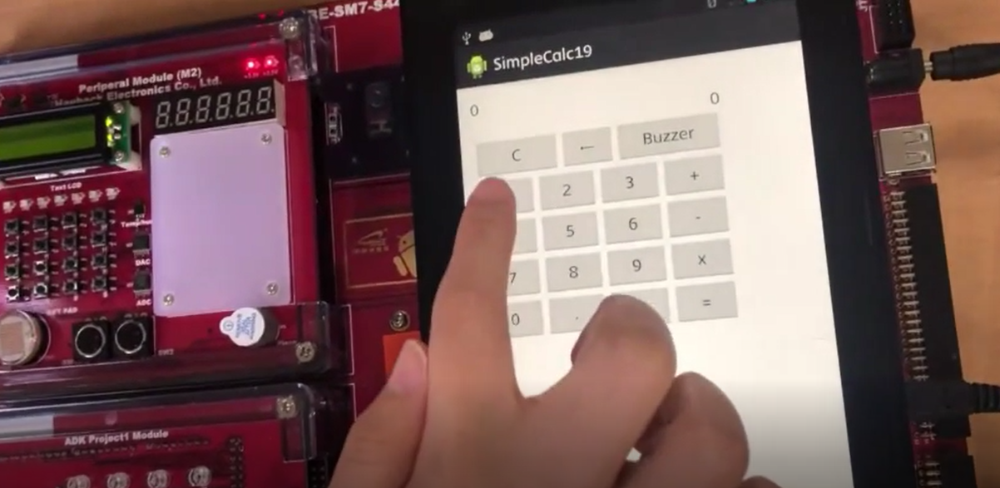

Application Production Project
부저 드라이버를 이용한 계산기
사칙연산이 가능한 계산기에 ‘Buzzer’버튼을 누르면 피에조 부저와 led가 실행되는 어플
일상생활에서 많이 사용하고 필요로 한 계산기 어플을 제작했고 추가 기능으로 Buzzer와 Led를 넣었습니다.
Layout
Button을 만들어 각 버튼에 알맞은 숫자와 기호 그리고 Buzzer버튼을 넣었습니다.
계산식과 결과 값을 볼 수 있도록 TextView를 넣었습니다.

Main - TextView
textView에 계산이 진행되고있는 입력값을 출력하고
계산완료된 결과값을 출력할 수 있도록힌 코딩소스입니다.

Main - button에 숫자 지정
각 버튼에 대해 값을 입력해주는 코딩소스입니다.
Button1=’1’ . . . Button9=‘9’
1~9까지 입력했습니다.
 Main - button에 기호 지정
각 버튼에 대해 연산기호을 입력해주고 소수값을 가질 수 있도록 형변환을 해주는 코딩소스입니다.
ButtonPlus = ‘+’ ButtonMinus = ‘-’
ButtonMul = ‘x’ ButtonDiv = ‘/ ’
 Main - ButtonEqual
계산하는 2개의 변수가 있기 때문에 num1처럼 num2도 형변환을 해줍니다.
사칙연산 기호들에 조건을 걸어 두 변수에 어떤 연산기호를 쓰면
어떻게 작동하게 되는지를 지정한 코딩소스입니다.

Main - Piezo,LED
Buzzer버튼을 누르면 피에조와 led가 실행되는 코딩소스입니다.

산출물 : 동영상
사진을 누르시면 youtube가 켜진 후 산출물 동영상이 실행됩니다.
프로젝트를 통해서 느낀점..
수원대학교 임베디드시스템 강의에서 이 프로젝트를 진행했습니다.
실제로 코딩을 통해 직접 내가 무엇인가를 구현해내는게 처음이라 신기하고 흥미로웠습니다.
이 프로젝트를 진행하면서 교수님이 안계실때 같은 조원과 어떻게 코딩을 진행해야하는지
모르는 부분은 구글링도 해보며 구글링하는 법도 배우며 발전했습니다.
프로젝트가 끝난 후 강의에서 제가 제출한 코딩소스에 대해서 설명도 하며
제 실력을 발전시킬 수 있었습니다.
마지막 페이지 입니다.
끝까지 봐주셔서 감사합니다.